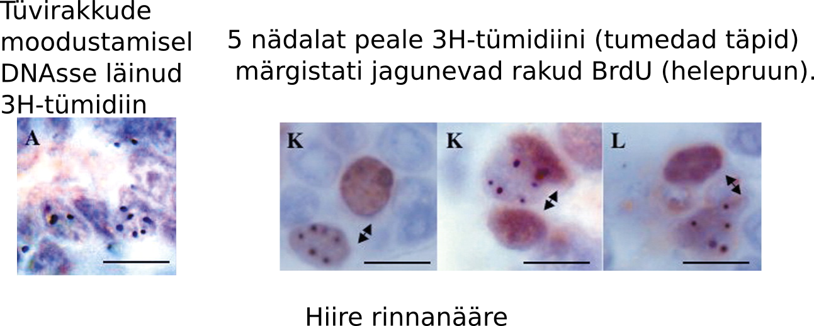

Genoomi terviklikkuse säilitamine ja vähiteke
Onkobioloogia
Taavi Päll
vanemteadur, VTAK
Recap
Tüvirakud on mutageneesi märklauad
Epiteelirakkude regeneratsioon sooleepiteelis
- Soole luumen sisaldab suures koguses toksiine ja baktereid.
- Inimene kaotab umbes 10\(^{11}\) epiteelirakku (~200 g) igapäevaselt.
- Laborihiire soole krüptis asuvad tüvirakud jagunevad elu jooksul umbes 1000 korda ilma jagunemispotentsiaali kaotamata ja kartsinogeensed mutatsioonid on harv nähtus.
- Sooleepiteeli regeneerivad tüvirakud ja transitoorselt paljunevad rakud (transit-amplifying, TA).
- Tüvirakud moodustavad 0.1-1% koe rakkudest.
- Epiteelkoe rakud diferentseeruvad transitoorselt paljunevatest rakkudest.
- Erütrotsüütide eluiga on ~120 päeva, mille järel nad põrnas endotsüteeritakse.
- Käärsoole epiteeli eluiga on 5-7 päeva kui nad surevad.
- Naha keratinotsüüdid surevad 20-30 päeva jooksul.
Epiteeli struktuur minimeerib geenikahjustusi
Tüvirakkude genoom on hästi kaitstud
- Koes kõige seespool asub tüvirakunišš.
- Krüpti põhjas asuvad 5 tüvirakku on soole sisu eest kaitstud tingituna oma asukohast ja lima poolt.
- TA rakud jagunevad 2-3 korda ja diferentseeruvad.

Soole mukoosa kaitseb vähi eest
GI vähi intsidents Muc2 hiirtel

| Grupp (n) | Hiiri GI vähiga |
|---|---|
| Muc2+/+ | |
| 6 kuud (6) | 0 |
| 1 aasta (18) | 0 |
| Muc2−/− | |
| 6 kuud (19) | 3 (16%) |
| 1 aasta (19) | 13 (68%) |
Tüvirakud on mutageneesi märklauad
Pikaealised rakud kontributeerivad vähi tekkesse
- DMBA/TPA naha kartsinogeneesi mudeliga tekkinud papilloomid ja adenoomid pärinevad pigem vaikeolekus rakkudest (naha tüvirakud?) kui aktiivselt jagunevatest.
- 5-FU (fluorouracil) mis inhibeerib aktiivselt jagunevaid rakke ei vähendanud oluliselt papilloomide teket, Morris et al., 1997.
- CML-i põhjustav Philadelphia kromosoom (Ph\(^1\), BRC-ABL translokatsioon) on olemas kõigis lümfoid ja müeloid raja rakkudes.
- See viitab, et mutatsioon on tekkinud pluripotentses tüvirakus.

Tüvirakkude strateegiad
Sümmeetriline ja asümmeetriline jagunemine

DNA kahjustuste vältimise strateegiad tüvirakkudes
Lisaks tüvirakkude suhteliselt aeglasemale jagunemisele ja nende asumisele anatoomiliselt kaitstud kohtades, toimib veel mitu teist mehhanismi:
- Apoptoos, röntgenkiirguse poolt kahjustatud hiire soole krüpti tüvirakud lähevad kiirelt apoptoosi selle asemel et DNA kahjustusi parandada.
- Toksiinide aktiivne transport rakust välja: MDR1 (multi drug resistance 1).
- Asümmeetriline replitseerunud DNA jaotumine.
Multi drug resistance perekonna valgud
Raku toksiinipumbad
- MRP (MDR associated protein) geeni transfektsioon SW-1573 inimese kopsu kartsinoomi rakkudesse muutis need rakud ravimiresistentseks.
- ABC transporterid on raku plasmamembraani ATP sõltuvad transpordivalgud, mis liigutavad rakust välja väga erinevaid substraate sh. toksiine.
| Drug | Relative resistance |
|---|---|
| Doxorubicin | 2.7 ± 0.4 |
| Daunorubicin | 3.2 ± 0.8 |
| Vincristine | 5.3 ± 1.3 |
| VP-16 | 4.9 ± 1.1 |
| Colchicine | 3.6 ± 0.1 |
| Rhodamine | 123 4.1 ± 0.3 |
| Taxol | 1.0 ± 0.1 |
P-glükovalgu struktuur
P-glycoprotein/MDR1

Asümmeetriline DNA jaotumine tütarrakkude vahel
Raku jagunemisel peegeldub tütarrakkude saatus ka nende DNA-s.

- Kui tüvirakud jagunevad, siis õdekromatiidid mis sisaldavad vanemat DNA ahelat (pildil roheliselt fluorestseeruv) segregeeruvad ühte tütarrakku.
- Vanem DNA segregeerub tavaliselt vähem diferentseerunud tütarrakku.
Matriits DNA selektiivne segregatsioon
Konserveerunud DNA ahel jääb tüviraku kompartementi
- DNA ahelad mida replikatsiooni käigus ei sünteesitud on nn. "konserveerunud" matriits ahelad.
- Värskelt sünteesitud DNA on "mitte-konserveerunud".
- Cairnsi hüpotees, 1975: replitseerunud tüviraku matriits DNA segregeerub tüvirakust tütarrakule ja uuesti sünteesitud ahelat sisaldav DNA pärandub transitoorselt prolifereeruvale tütarrakule.

Tüviraku nišš ei jagune intensiivselt
Somaatilised tüvirakud ei märgistu hästi DNA-sse lülituvate ühenditega, välja arvatud tekkimisel ja koe kahjustuste korral.
- Somaatilised tüvirakud säilitavad oma tekkimisel DNA-sse lülitatud märgise (3H-tümidiin) väga pika-aegselt.
- Lühiajaline kudede inkubeerimine 3H-tümidiiniga märgistab ainult transitoorselt jagunevad rakud ning koe uuenedes märgis kaob ruttu.
- Hiirtel puberteedis rinnanäärme tüvirakkude nišši moodustumisel sisse viidud 3H-tümidiin jääb aga sinna pidama sest tüvirakud jagunevad veel sümmeetriliselt (tekib kaks tüvirakku).

Konserveerunud DNA-d sisaldavad rakud karvanääpsus
Label-retaining cells eksperimentaalselt defineeritud rakupopulatsioon, mis säilitavad DNA-sse lülitatud märgise (nt. BrdU) ja mis peaksid olema aeglaselt jagunevad tüvirakud.

Mutantsete tüvirakkude teke läbi tsütotoksilisuse
Krooniline koekahjustumine võib istutada mutantse DNA tüviraku nišši
- Kartsinogeenid võivad toimida läbi koekahjustuse, kui kahjustada saavad ka tüvirakud.
- Tüviraku sümmeetriline jagunemine võib põhjustada viimases S-faasis sünteesitud mutantse DNA jäämise tüviraku nišši.
- Selline mutantne DNA omandab siis nn "surematu" staatuse.
- Alkohol, mis toimib tuumori promootorina, põhjustab just sellist tüüpi kahjustusi suuõõne epiteelile.
- Hüpoteetiline? super kartsinogeen oleks sellisel juhul aine mis on üheaegselt tsütotoksiline ja mutageenne.
Biokeemilised DNA reparatsioonimehhanismid
Lisaks raku ja koe tasemel toimivatele mehhanismidele, mis peaksid minimeerima muteerunud somaatilise DNA säilimise ja pärandumise ekisteerivad loomulikult ka biokeemilised DNA reparatsioonimehhanismid.
Biokeemilised reparatsioonimehhanismid toimivad muutustele nagu:
- replikatsioonivead mis tekivad DNA sünteesil (vale nukleotiidi lülitamine ahelase),
- nukleotiidide spontaansed biokeemilised muutused (depurineerumine ja depürimidineerumine, deamineerumine),
- mutageensete ühendite poolt põhjustatud nukleotiidide muutused (kiirgus, alkülatsioon).
DNA replikatsiooni vead
Imetajate genoomis on 15 DNA polümeraasi. Mõned funktsioneerivad genoomi replikatsioonil, kuid enamus toimivad DNA kahjustuste parandamisel.
- DNA replikatsiooni viivad läbi DNA Pol \(\alpha\), Pol \(\delta\) ja Pol \(\epsilon\).
- DNA polümeraasid lülitavad vigase nukleotiidi DNA-sse sagedusega 1/100000 aluspaari kohta (\(10{-5}\)).
- Inimese genoomi replitseerimisel teeb see diploidses rakus oleva \(6\times10^{9}\) aluspaari kohta 60000 mutatsiooni.
- Kui DNA Pol (\(\alpha\), \(\delta\), \(\epsilon\)) lülitab vale nukleotiidi ahelasse, korrigeerib ta selle kohe oma 3′–5′ eksonukleaasse aktiivsuse abil.